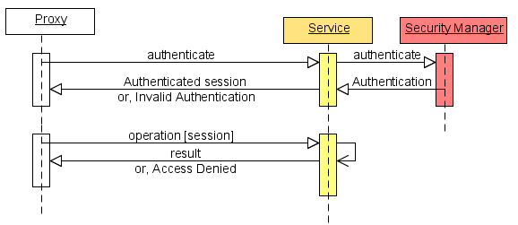
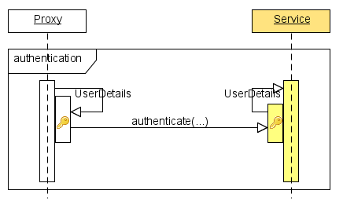
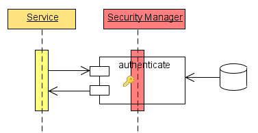
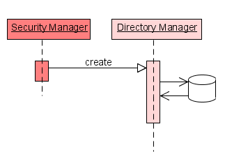

Section Summary: Authentication, Encryption, Authenticity Validation, and Managing users and roles
Authentication
Authentication is the act of supplying user credentials (usually username and password) to be confirmed as authentic against a secured service. Authentication fails either due to an unknown user or an invalid password, resulting in an AuthenticationException. A successful authentication results in an authenticated session used for further correspondence.
The diagram illustrates the sequence of events:

The service (GSA/GSM/GSC/Processing Unit Space Instance) receives a request for authentication. Usually this is done by supplying a UserDetails object which holds the credentials of a user. This is passed along to the SecurityManager which is responsible for authenticating the request.
An attempt to authenticate the passed UserDetails object, returns a fully populated Authentication object (including granted authorities) if successful. On failure, an AuthenticationException is thrown.
Further correspondence are done via this authenticated session context. The service has security interceptors which intercept each method call to verify the granted privileges. An AccessDeniedException is thrown if the user lacks sufficient privileges to perform an operation.
Encryption
A two-way encryption is used to protect the credentials passed as part of the authentication process. The UserDetails object is encrypted before it is sent along the stream, and decrypted at the service. Of course, it is best to use SSL for transport layer security, but nevertheless we ensure these details are encrypted. The two-way encryption is done using a private key available to both client and server. Since 7.1.1
a generated AES compliant key can be kept in a gs-keystore.key file located in the classpath.
Note that a password is usually encrypted using a one-way hash function, e.g. an MD5 algorithm. This one-way encryption is an implementation detail of the SecurityManager. This should not be confused with the two-way encryption done at the transport layer of an authentication call.

Authenticity Validation
As noted, the SecurityManager implementation is responsible for handling an authentication request. The UserDetails supplied are used to extract the user by-name, and validate that the supplied password matches the stored password. Usually passwords are stored after they have been hashed with a one-way function (such as MD5). When validating, the supplied password is encrypted using this algorithm and compared to the stored password.
Our default SecurityManager implementation uses an MD5 algorithm to encrypt the passwords. It can be customized with your own PasswordEncoder or you can replace the SecurityManager implementation all together.

Managing users and roles
The users (UserDetails) and roles (RoleDetails) are usually stored in some kind of storage (file, data-base, etc). This storage (directory) is managed by acquiring a DirectoryManager, through which you may administer the users and roles. It is a simple API for creating, deleting, updating and mapping of users and roles.
We provide two distinct privileges for managing the directory - one for user management and one for role management.
Our default DirectoryManager implementation utilizes the GUI (GigaSpaces Management Center) for easy administration. When our default directory is first created, only an admin/admin user may be allowed to access and administer the directory. After which, this user can be deleted - but don't forget to provide another user with management capabilities.
You may manage the directory directly using the DirectoryManager API. It has a clear distinction between a UserManager and a RoleManager.

The directory can be shared or defined individually for each service. This is an implementation specific configuration which is discussed in more detail in our "Default Security" section. As an example, in order for each service to access the same file-based directory, it needs to be shared or copied between the secured services - or better yet, configured to be downloaded from an HTTP server. If the implementation was based on a data-base, then the services can be configured with the same connection URL or a specific one.
|